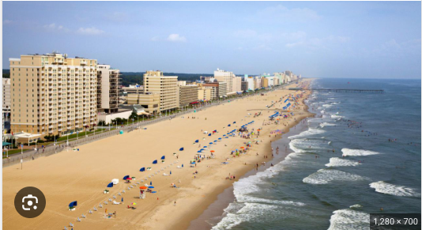

Virginia Beach
Virginia beach is closer to cities in North Carolina than it is to other Virginia cities.
The Virginia Beach boardwalk was originally built in 1888.
Virginia beach is home to many celebrities.
Virginia Beach has many events that occur in the specific area such as, a Beach,there is a boardwalk with fair rides and arcades.
There are stores and resturants also on the outskirts of Virginia Beach.
Viginia's Beach average temperature is usually 60 degrees.


Click the link below to make your way back to the homepage to stsrt your process with booking your next vacation!
DestinationSydnie